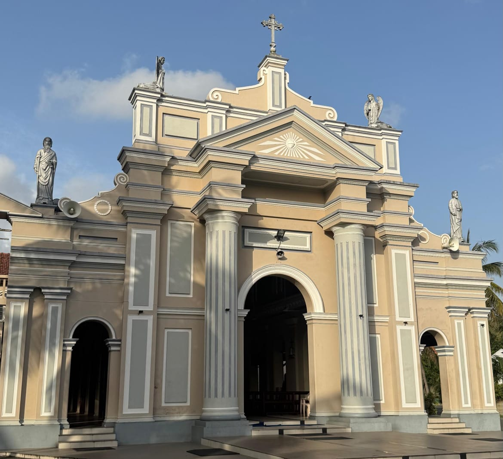
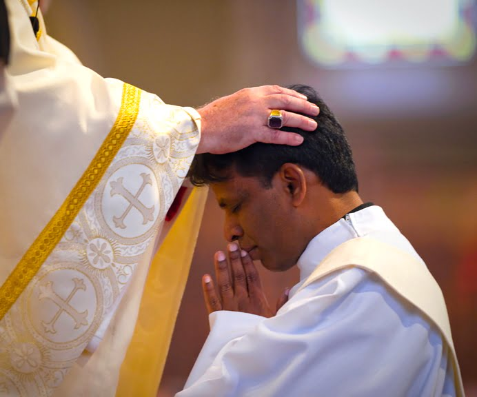
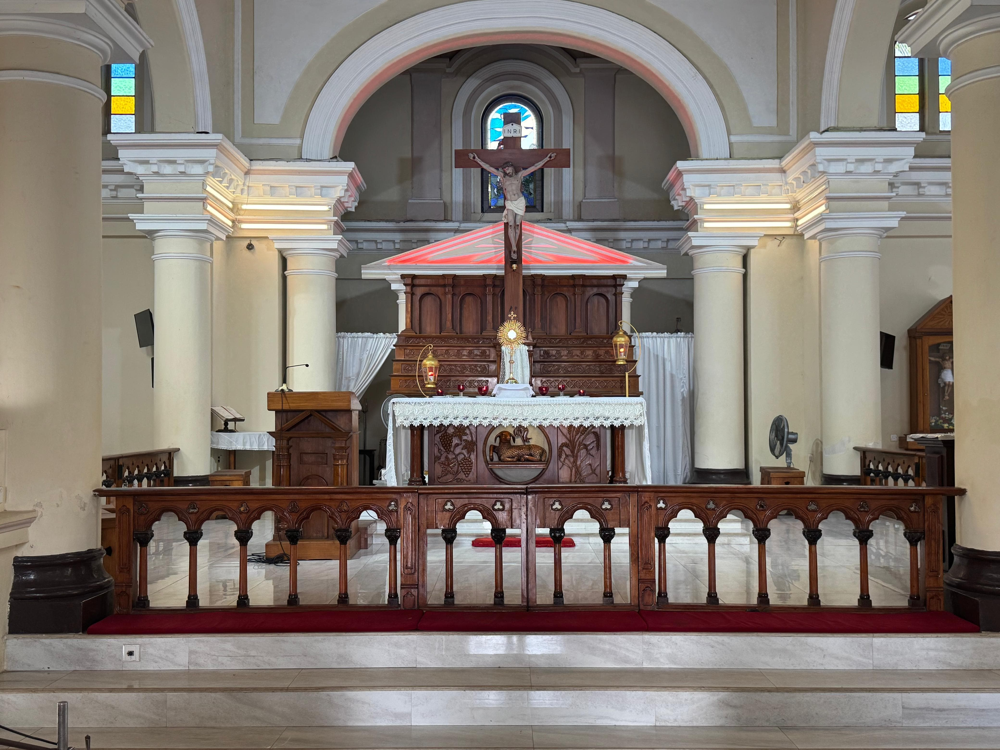

Nestled in the heart of Kattuwa, Negombo, St. Francis De Sales Church stands as a beacon of
faith, hope, and love. Dedicated to our patron, St. Francis de Sales a saint renowned for his deep compassion and
gentle spirit our parish warmly welcomes all who seek spiritual growth and community. Whether you're a lifelong
Catholic, returning to the Church, or exploring faith for the first time, we invite you to join us in worship,
fellowship, and service. Together, as one family in Christ, we strive to live out the Gospel and be a light to our
neighbors.

About Our Church
Discover the rich history, spiritual legacy, and vibrant community of St. Francis de Sales Church, Kattuwa , all
in one place. From its humble beginnings to its role as a center of faith and service, our church has been guided
by devoted priests, nuns, annavis, and lay leaders who have left an enduring mark on both local and global
religious life. Learn about the spiritual journeys of those who served here, explore their inspiring stories, view
historical timelines, and understand how their dedication helped shape the faith-filled community we are today all
available right here on our website.

Shepherds of the Flock
Explore the inspiring lives of those who have lovingly shepherded our community through word, sacrament, and
example. From the early priests who laid the foundation of our parish to the modern-day pastors who continue their
mission, each spiritual leader has played a vital role in guiding the faithful of St. Francis de Sales Church,
Kattuwa, with compassion, wisdom, and unwavering devotion. Their journeys rooted in service, sacrifice, and
holiness have shaped not only the church but also countless lives across generations. Through this website, you
can learn about their ministries, timelines of service, and the lasting impact they’ve made on our parish and
beyond.

See Our Parish Family
Discover the rich heritage of our church community through the inspiring lives of our priests, nuns, annavis, and
lay leaders who have lovingly built and sustained the faith-filled family of St. Francis de Sales Church, Kattuwa.
From the early generations who laid its foundation to the present-day servants continuing their legacy, each
individual has played a unique and meaningful role in shaping our parish. Learn about their journeys, ministries,
and lasting impact all rooted in service, dedication, and holiness.
Connect With Our Church
Stay connected with the vibrant faith community of St. Francis de Sales Church, Kattuwa, through our website your
spiritual hub for worship, fellowship, and service. Here, you’ll find everything you need to nurture your faith
journey, from daily and Sunday Mass schedules to sacramental information, parish announcements, and inspiring
homilies. Connect easily with our priests, join uplifting ministries, and explore volunteer opportunities that
make a difference. Stay updated on upcoming retreats, Bible studies, and parish events designed to bring our
community closer in faith and love. Whether you're seeking guidance, looking to serve, or simply want to stay
informed, our website keeps you linked to the heart of our parish life. Visit us today and grow deeper in faith
with your St. Francis de Sales Church family!